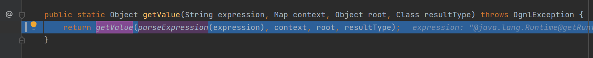
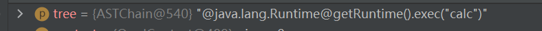
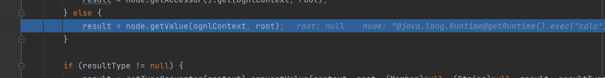
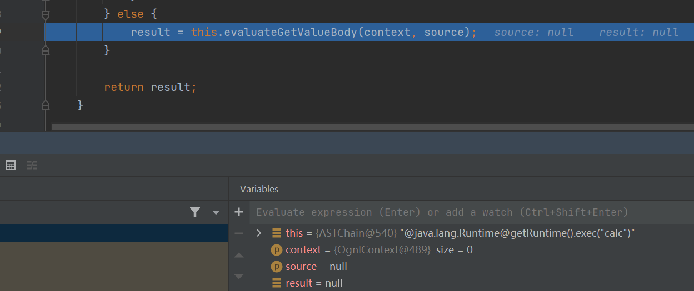
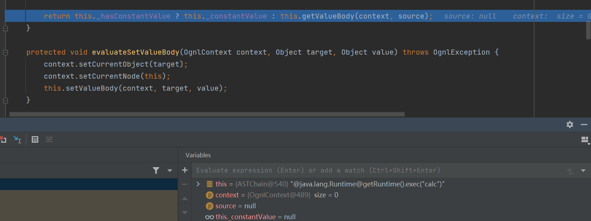
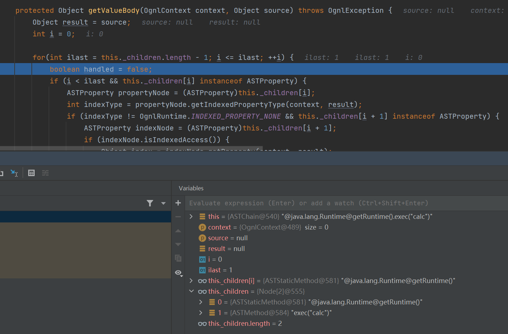
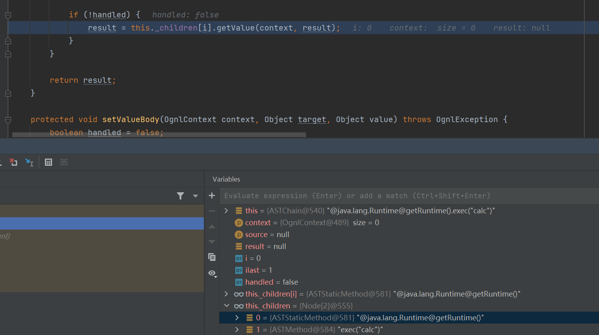

基础
OGNL表达式的作用
- 支持对象方法的调用
ObjectName.methodName() - 静态方法的调用和值得访问
@java.lang.String@format('aa%s', 'RoboTerh'), 这里的包名必须要是完整的包名，不能只使用String - 支持变量赋值操作和表达式串联
- 访问OGNL上下文，和ActionContext
- 直接new创建一个对象
ActionContext
是一个上下文对象，对应OGNL的context
除了三个常见的作用域request、session、application外，还有以下三个作用域：
- attr：保存着上面三个作用域的所有属性，如果有重复的则以request域中的属性为基准；
- paramters：保存的是表单提交的参数；
- VALUE_STACK：值栈，保存着valueStack对象，也就是说可以通过ActionContext访问到valueStack中的值
ValueStack
是OGNL表达式存取数据的地方
获取值栈的方式
- 在request作用域中获得值栈
ValueStack对象在request范围内的存储方式为request.setAttribute("struts.valueStack",valuestack)，可以通过如下方式从request中取出值栈的信息。
//获取 ValueStack 对象，通过 request 对象获取
ValueStack valueStack = (ValueStack)ServletActionContext.getRequest()
.getAttribute(ServletActionContext.STRUTS_VALUESTACK_KEY);在上述示例代码中，ServletActionContext.STRUTS_VALUESTACK_KEY是ServletActionContext类中的常量，它的值为struts.valueStack。
- 在ActionContext中获得值栈
在使用Struts2框架时，可以使用OGNL操作Context对象从ValueStack中存取数据，也就是说，可以从Context对象中获取ValueStack对象。实际上，Struts2框架中的Context对象就是ActionContext。
ActionContext获取ValueStack对象的方式如下所示：
//通过 ActionContext 获取 valueStack 对象
ValueStack valueStack = ActionContext.getContext().getValueStack();ActionContext对象是在StrutsPrepareAndExcuteFilter的doFilter()方法中被创建的，在源码中用于创建ActionContext对象的createActionContext()方法内可以找到获取的ValueStack对象的信息。
基本语法
对象树访问
利用.进行连接
对变量的访问
在前面加上#
数组，对象
//例如
group.users[0]
#session['mysession']
//构造list
{"green", "red", "blue"}
//构造map
#{"key1":"value1", "key2":"value2"}
//新建对象
new Java.net.URL("xxx");投影和选择语法
投影：
group.users.{username}获取group中所有users的username
选择：
collection.{X YY}, X是一个选择操作符，YY是选择用的逻辑表达式
选择操作符：
?选择满足条件的所有元素^选择满足条件的第一个元素$选择满足条件的最后一个元素
# % $
#符主要有三种用途：
- 访问非根对象属性，即访问OGNL上下文和Action上下文，由于Struts2中值栈被视为根对象，所以访问其他非根对象时需要加#前缀，#相当于
ActionContext.getContext()； - 用于过滤和投影（projecting）集合，如
books.{? #this.price<100}； - 用于构造Map，如
#{'foo1':'bar1', 'foo2':'bar2'}；
- %符
%符的用途是在标志的属性为字符串类型时，告诉执行环境%{}里的是OGNL表达式并计算表达式的值。
- $符
$符的主要作用是在相关配置文件中引入OGNL表达式，让其在配置文件中也能解析OGNL表达式。（换句话说，$用于在配置文件中获取ValueStack的值用的
能解析OGNL的api
| 类名 | 方法名 |
|---|---|
| com.opensymphony.xwork2.util.TextParseUtil | translateVariables,translateVariablesCollection |
| com.opensymphony.xwork2.util.TextParser | evaluate |
| com.opensymphony.xwork2.util.OgnlTextParser | evaluate |
| com.opensymphony.xwork2.ognl.OgnlUtil | setProperties,setProperty,setValue,getValue,callMethod,compile |
| org.apache.struts2.util.VelocityStrutsUtil | evaluate |
| org.apache.struts2.util.StrutsUtil | isTrue,findString,findValue,getText,translateVariables,makeSelectList |
| org.apache.struts2.views.jsp.ui.OgnlTool | findValue |
| com.opensymphony.xwork2.util.ValueStack | findString,findValue,setValue,setParameter |
| com.opensymphony.xwork2.ognl.OgnlValueStack | findString,findValue,setValue,setParameter,trySetValue |
| ognl.Ognl | parseExpression,getValue,setValue |
表达式注入漏洞
如果我们能够控制ognl表达式，就可以达到恶意目的
package pers.ognl;
import ognl.Ognl;
import ognl.OgnlContext;
import ognl.OgnlException;
import java.io.IOException;
public class Test {
public static void main(String[] args) throws OgnlException, IOException {
//创建一个上下文对象
OgnlContext context = new OgnlContext();
//getValue触发漏洞
//Ognl.getValue("@java.lang.Runtime@getRuntime().exec('calc')", context, context.getRoot());
//setValue触发漏洞
Ognl.setValue(Runtime.getRuntime().exec("calc"), context, context.getRoot());
}
}在上面的表格中，就提到过了，Ognl.getValue, Ognl.setValue都可以进行ognl表达式注入
这里也成功弹出了计算器
调式分析栈调用
首先在getValue方法前面打上断点
在getValue方法中使用parseExpression来处理我们的表达式，跟进他

将其转化为了ASTChain类型的tree

之后将转化为node类型的tree继续调用getValue方法


这里的this，就是我们需要执行的恶意命令，我们调用evaluateGetValueBody方法来处理它，跟进

之后调用getValueBody来处理

在这里将他拆成了两部分

首先处理的是前半部分，this._children[i]就是前半部分，调用它的SimpleNode#getValue方法，并且将类名和方法名分割开了，这里的result就是Runtime类名
之后就是通过反射进行获取类名，和方法名，进行执行
简单地说，OGNL表达式的getValue()解析过程就是先将整个OGNL表达式按照语法树分为几个子节点树，然后循环遍历解析各个子节点树上的OGNL表达式，其中通过Method.invoke()即反射的方式实现任意类方法调用，将各个节点解析获取到的类方法通过ASTChain链的方式串连起来实现完整的表达式解析、得到完整的类方法调用。
参考
[OGNL表达式注入漏洞总结 Mi1k7ea ]


- Post link: https://roboterh.github.io/2022/04/07/OGNL%E8%A1%A8%E8%BE%BE%E5%BC%8F%E6%B3%A8%E5%85%A5/
- Copyright Notice: All articles in this blog are licensed under unless otherwise stated.